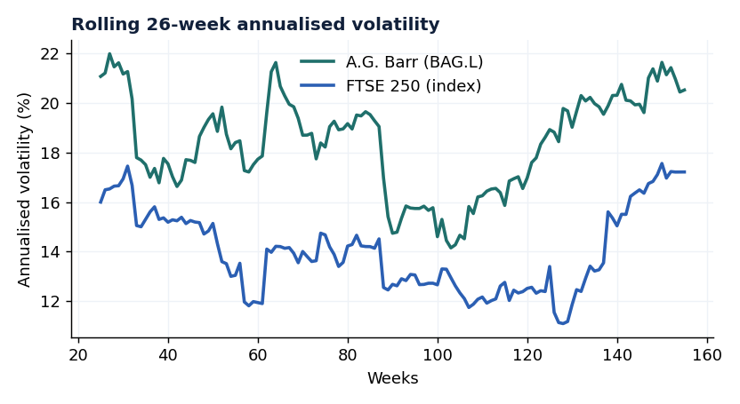
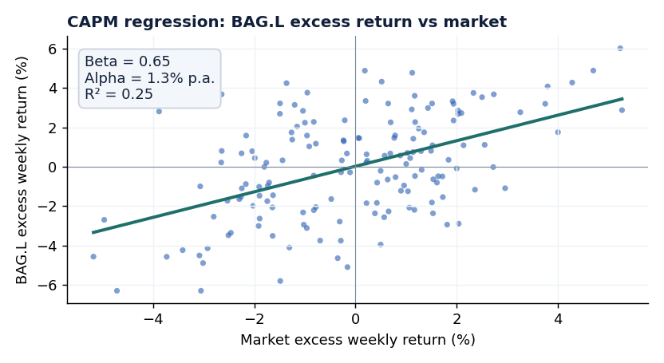

CAPM Beta & Volatility Analysis — A.G. Barr vs FTSE 250
An R project measuring a stock's market risk: converting weekly prices to returns, estimating annualised and rolling volatility, and running a CAPM regression to extract beta, alpha and R². Written to pull live data via quantmod, with a base-R path that runs anywhere.
What it shows
Reading the result
A beta of 0.65 says A.G. Barr is defensive — for a 1% market move the stock tends to move ~0.65%, consistent with a consumer-staples name. Its total volatility (18.9%) is higher than the index, but only 25% of that is market-driven (R² 0.25); the rest is stock-specific. A small positive alpha (+1.3% p.a.) means it modestly beat its CAPM-required return over the window. Exactly the risk lens a markets/risk desk uses to size and hedge a position.
Rolling volatility
26-week annualised, stock vs index

CAPM regression
Excess return scatter with fitted line (slope = beta)

Method
- Weekly prices → log returns (additive, cleaner for statistics).
- Annualised volatility = weekly σ × √52; rolling 26-week window shows risk through time.
- CAPM: regress excess stock return on excess market return; slope = beta, intercept = alpha, fit = R².
- Risk-free rate netted off both sides before the regression.
Honesty note
quantmod when run with USE_LIVE_DATA <- TRUE. Run it to reproduce on live data — the method and code are identical.Core of the R code
Full script downloadable from the sidebar
# weekly log returns rs <- diff(log(px$stock)) # stock rm <- diff(log(px$market)) # market rf <- 0.04 / 52 # weekly risk-free # annualised volatility ann_vol <- function(r) sd(r) * sqrt(52) # CAPM: excess stock return ~ excess market return capm <- lm((rs - rf) ~ (rm - rf)) beta <- coef(capm)[2] # systematic risk alpha <- coef(capm)[1] * 52 # annualised alpha r2 <- summary(capm)$r.squared